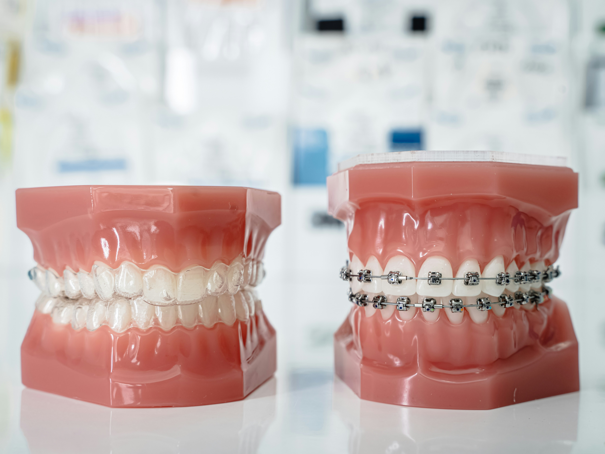
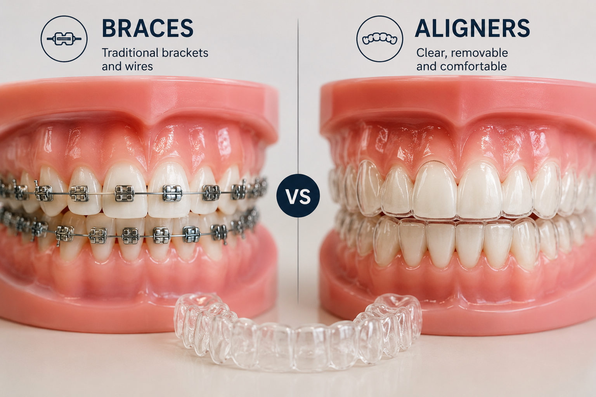
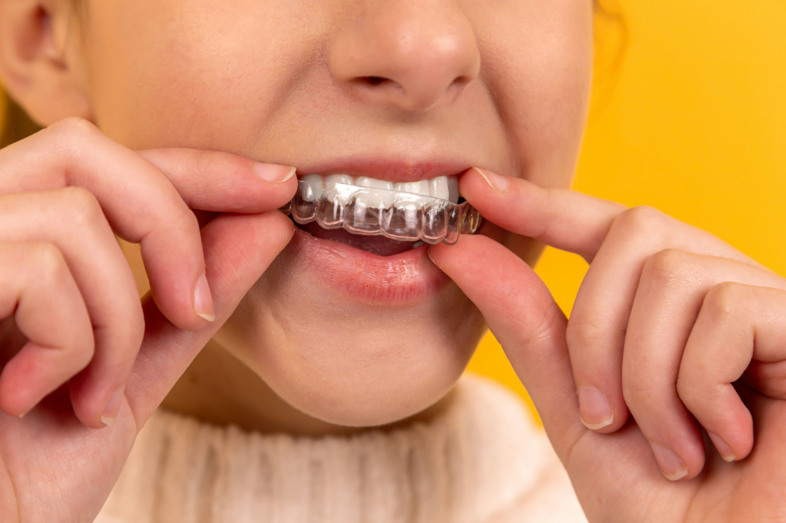

★★★★★
"I always felt shy about my crooked teeth. After my treatment here, I can't stop smiling. Dr Deepesh guided me through every step."
Teeth Straightening
Straighten crooked or crowded teeth and correct your bite — for a healthier mouth and a confident, beautifully aligned smile.


Braces and aligners are orthodontic treatments that gently move your teeth into their correct position over time. They fix crooked, crowded, or gapped teeth and correct bite problems — giving you a straighter, healthier smile.
Braces use small brackets bonded to each tooth, connected by a thin wire. Regular adjustments to the wire apply steady, gentle pressure that guides teeth into alignment. They are highly effective for even the most complex cases.
Clear aligners are a series of custom-made, transparent trays that fit snugly over your teeth. You wear each set for a couple of weeks before moving to the next, gradually shifting your teeth. They are removable and nearly invisible — a discreet option for teens and adults.
Crooked or misaligned teeth are about far more than appearance. Left untreated, poor alignment can affect your long-term oral health in several ways:
Both straighten your teeth beautifully, but they suit different lifestyles and needs. Here's how they compare:
| Feature | Traditional Braces | Clear Aligners |
|---|---|---|
| Appearance | Visible metal brackets and wires | Transparent and nearly invisible when worn |
| Removable | Fixed in place for the whole treatment | Removable for eating, brushing and special occasions |
| Complex cases | Excellent for even severe alignment and bite issues | Ideal for mild to moderate cases |
| Comfort | Brackets may irritate cheeks initially | Smooth trays with no sharp edges |
| Discipline needed | Works around the clock automatically | Must be worn 20–22 hours a day to be effective |
There's no single "best" choice — it depends on your teeth, lifestyle, and goals. During your consultation, Dr Deepesh Agrawal will recommend the option that fits you best.
Straightening your teeth is a gradual, carefully monitored process that usually takes several months to a couple of years, depending on your case. Watch the short walkthroughs below, then read what to expect at each stage.
A step-by-step look at how braces straighten your teeth.
A step-by-step look at how clear aligners straighten your teeth.
Your journey begins with a thorough examination. Dr Agrawal checks your teeth, gums, and bite and takes digital X-rays, photos, or a 3D scan to map out exactly how your teeth need to move.
You'll discuss your goals and receive a clear, personalised treatment plan — including whether braces or aligners suit you best, an estimated timeline, and a cost estimate.
For braces, small brackets are gently bonded to your teeth and connected with a wire — a comfortable, painless process. For aligners, your custom trays are made from your scan and you receive your first sets.
You'll be shown exactly how to care for your braces or wear your aligners, and what to expect in the first few days as your teeth begin to adjust.
With braces, you'll visit every few weeks so the wire can be adjusted to keep your teeth moving. With aligners, you simply switch to the next tray in the series roughly every one to two weeks.
Throughout treatment, Dr Agrawal monitors your progress at check-ups to make sure everything is on track and comfortable.
Once your teeth have reached their ideal position, your braces are removed or you finish your final aligner tray. You'll see the full result of your beautifully straightened smile.
Dr Agrawal gives your teeth a thorough polish and checks that your bite is comfortable and even.
Teeth naturally tend to drift back over time, so a custom retainer is provided to hold your new smile in place. Wearing it as advised keeps your results looking great for years to come.
With that final step, your orthodontic treatment is complete — and your new smile is ready to enjoy.

Good habits during treatment protect your teeth and help you finish on time with a great result. A few simple routines make all the difference:
₹40,000 + per treatment
The cost depends on the type of treatment you choose — metal braces, ceramic braces, or clear aligners — as well as the complexity of your case and how long treatment takes. Because every smile is different, we provide an itemised, no-obligation quote after your consultation.
Straighter teeth are a long-term investment in your oral health and confidence. Ask us about flexible payment options and EMI plans during your visit.
Prices are indicative and confirmed only after an in-person examination.
"I always felt shy about my crooked teeth. After my treatment here, I can't stop smiling. Dr Deepesh guided me through every step."
"Got braces for my teenage son. The clinic explained everything clearly and the adjustments were always quick and painless. Great results!"
"The aligners were so comfortable and truly invisible — no one at work even noticed. My smile looks amazing and the pricing was transparent."
You may feel mild pressure or soreness for a few days after braces are fitted or when you switch to a new aligner tray — this is a normal sign your teeth are moving. It settles quickly and is easily managed with regular pain relief.
Most treatments take between 6 months and 2 years, depending on how much your teeth need to move. Dr Agrawal will give you an estimated timeline during your consultation.
For mild to moderate cases, aligners work very well and are nearly invisible. For more complex alignment or bite problems, braces are often the more effective choice. We'll recommend the best option for your case.
Not at all. Teeth can be moved at almost any age as long as your gums and bone are healthy. Many of our patients are adults who choose discreet clear aligners.
With aligners, you remove them to eat, so there are no food restrictions. With braces, you should avoid hard and sticky foods that can damage the brackets and wires.
Yes. Teeth naturally tend to drift back, so wearing a retainer as advised is essential to keep your new smile straight for the long term.
Book a consultation with Dr Deepesh Agrawal to find out whether braces or clear aligners are right for you — and get a clear, personalised treatment plan and quote.
Malviya Dental Assistant
Powered by AI